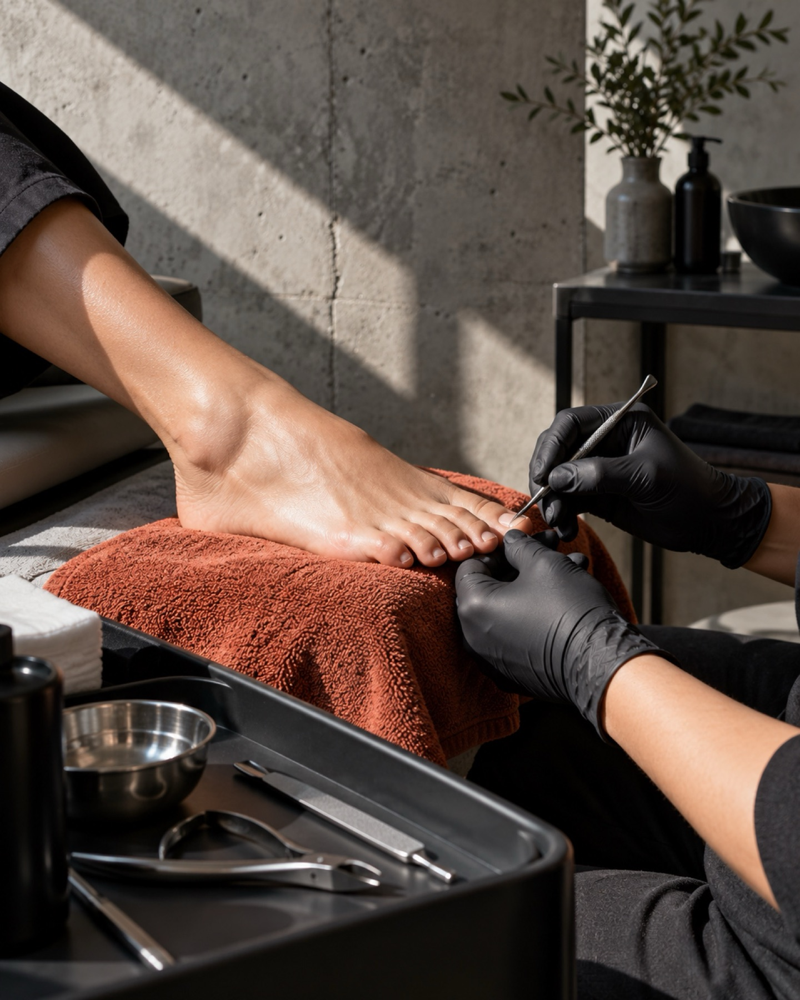
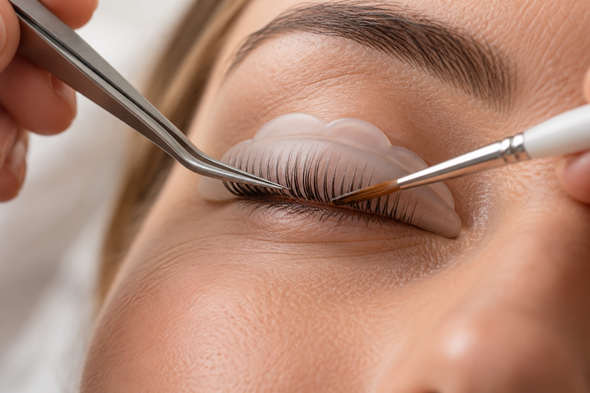
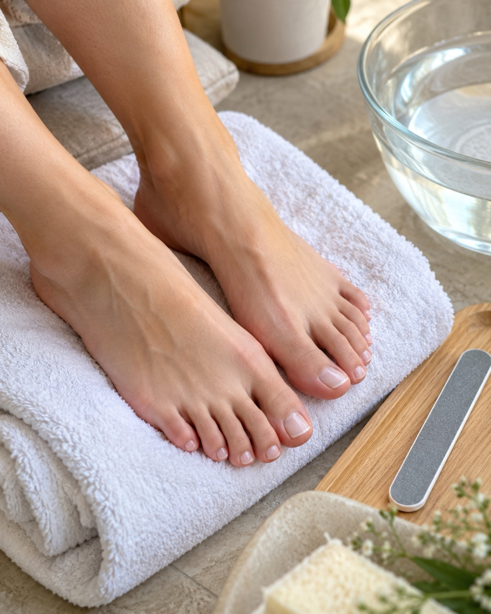
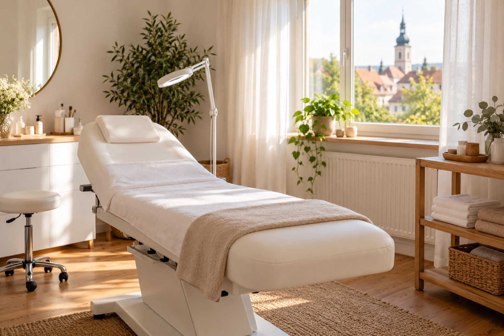
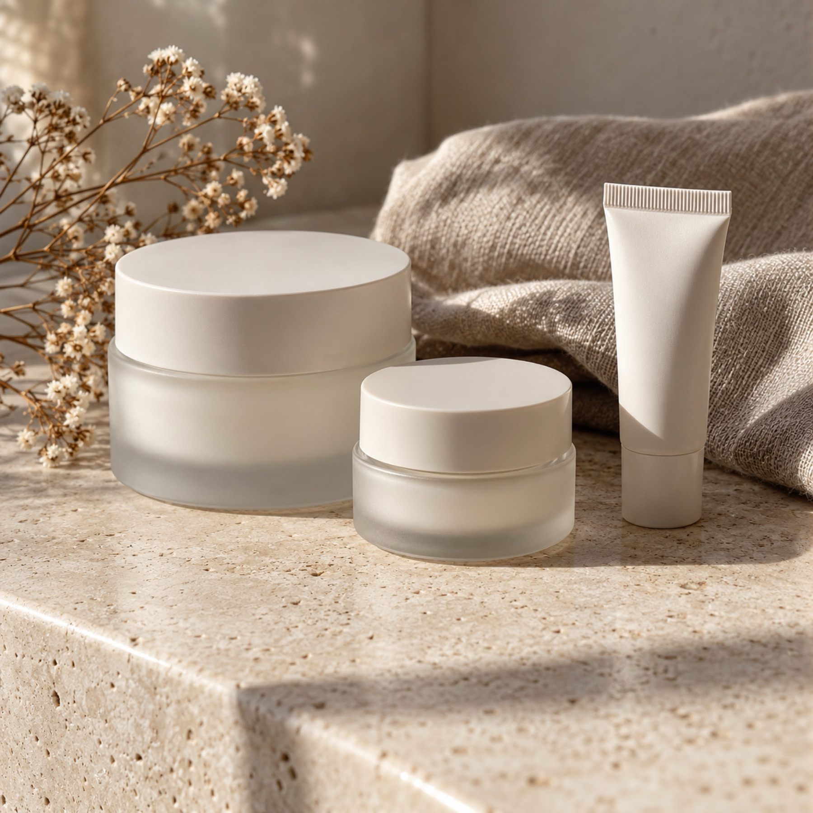

Verden (Aller)
Klare Kante. Weiche Haut.
Wimpernlifting und Fußpflege in Verden. Ehrlich und ohne Umwege.
Jetzt anrufenLeistungen
Was ich für Sie tue
01Wimpernlifting

Ihre eigenen Wimpern werden in Form gebracht und schwingen stärker nach oben. Extensions gibt es dabei nicht.
- Wimpernlifting, auf Wunsch mit Wimpernfärben
- Natürlicher, offener Blick
- Pflegetipps für die Tage danach
02Fußpflege / Pediküre

Ich pflege Füße und Nägel gründlich und in Ruhe, mit Produkten von Peclavus und Dr. Spiller.
- Nagelpflege und Hautpflege
- Hornhaut wird entfernt
- Pflegetipps für zu Hause
Warum hier
Kein Schema. Kein Schnickschnack.
Kein fester Ablauf
Ich richte die Behandlung nach Ihnen aus und nicht nach einem Plan.
Ruhige Einzeltermine
Der Termin gehört Ihnen, ich habe Zeit.
Peclavus und Dr. Spiller
In der Fußpflege arbeite ich mit diesen beiden Marken.
Direkter Draht
Sie erreichen mich direkt: per Telefon oder Instagram-Nachricht.
Über Nicole Geurts-Seifert
Ich nehme mir Zeit
Ich bin Nicole Geurts-Seifert, mein Studio liegt in der Andreasstraße in Verden. Bei mir gibt es nichts von der Stange: Ich höre erst zu und richte den Termin dann nach Ihnen.
In der Fußpflege arbeite ich mit Peclavus und Dr. Spiller. Beim Wimpernlifting ist mir wichtig, dass es natürlich aussieht und Sie sich darin wiedererkennen.

Ablauf
Ihr Termin in drei Schritten
-
Anfrage
Sie rufen an oder schreiben mir bei Instagram, und wir suchen einen Termin, der bei Ihnen passt.
-
Beratung vor Ort
Erst reden wir: Was wünschen Sie sich, was ist sinnvoll? Dann fange ich an.
-
Behandlung und Pflegetipp
Ich behandle in Ruhe. Zum Schluss bekommen Sie Tipps, wie Sie das Ergebnis zu Hause pflegen.
Ergebnisse
Eindrücke

Beispielbilder
FAQ
Häufige Fragen
Wie bereite ich mich auf den Termin vor?
Für das Wimpernlifting kommen Sie bitte ungeschminkt und ohne Kontaktlinsen. Für die Fußpflege müssen Sie nichts mitbringen, nur bequeme Schuhe für den Heimweg.
Wie lange dauert eine Behandlung?
Das hängt von Ihren Wünschen ab. Wenn wir den Termin machen, sage ich Ihnen, wie viel Zeit Sie einplanen sollten.
Was muss ich nach der Behandlung beachten?
Nach dem Wimpernlifting sollten die Wimpern in den ersten 24 Stunden trocken bleiben. Nach der Fußpflege gebe ich Ihnen passende Pflegetipps für zu Hause mit.
Was gilt, wenn ich einen Termin absagen muss?
Sagen Sie mir bitte so früh wie möglich Bescheid, per Telefon oder Instagram-Nachricht. Einen neuen Termin finden wir dann schnell.
Kontakt und Anfahrt
Termin anfragen
Jetzt anrufen: 04231 899604 Kosmetik & Fußpflege Nicole Geurts-SeifertAndreasstraße 21
27283 Verden (Aller)